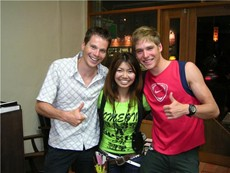

Zondag 3 mei as. ging onze atleet Simon De Cuyper van start in de internationale triatlon Korea van de vernieuwde Dextro Energy Triatlon World Championship Series (ITU). De eerste wedstrijd uit het regelmatigheidscriterium van 7 verspreid over de hele wereld waar de wereldtoppers present zijn en telkens een prijzenpot van zo'n 150 000 USD verdelen. Simon finishte op een 65e plaats. Zijn analyse was dan ook zeer nuchter, "We schieten te kort in het zwemmen om een rol van betekenis te kunnen spelen. Het was een unieke ervaring en weten waaraan we nog moeten verder werken, nu ga ik me concentreren op het EK op 20 juni in Italië.." De wedstrijdwas live te volgen op triathlon.org. Zijn laatste bericht en terugblik op zijn Japans-avontuur kan je hieronder lezen. We wensen onze atleet alvast veel succes!
Het Azië verhaal is ondertussen aan een volgend hoofdstuk beland, namelijk de World championship event race in Tong Yeong (Korea). Na een toch wel minder resultaat in Ishigaki is het hoofd klaar om deze zondag beter te doen. Mijn wedstrijd was anders niet slecht begonnen, ik had een plaats naast Peter Croes gekozen op het ponton (al was er niet zoveel keus meer) en zwom de eerste 100meters vlot mee naast hem. Toen liep het echter mis, mijn andere buur besloot me eens goed bij de schouder beet te nemen en plots kwam ik middenin de wasmachine terecht… Ik verloor (te) veel tijd op de snelste zwemmers en kwam in de derde fietsgroep te zitten.

De kopgroep van 6 heeft gans de wedstrijd aan een beestig tempo gereden, het tweede peloton kreeg 3 minuten aan zen broek, en wij bleven met 8 man status quo op een minuut van dat tweede peloton. Die eerste groep vocht het onderling uit voor de top 6 in het lopen, terwijl in mijn groep de geslagenen terug te vinden waren. Ik wou er nog een deftig loopnummer uitpersen maar de ademhaling stokte wat.
Dit weekend wordt het weer een heel andere race, een wetsuit swim ligt me hopelijk beter, en het fietsparcours leent zich minder goed tot ontsnappingen. Ik zet men beste beentje voor en zie wel wat dat geeft. Daarnet de race briefing gehad, de zaal zat vol met wereldtoppers… Robertson , Kahlefeldt, Whitfield, Belaubre, Fleureton, Atkinson, Gemmell, Docherty, Don, Freeman, Reed, Ospaly, Sysoev. De series vervangt een eendags wk, zodat de toppers elkaar vaker partij geven en het is een geweldige uitdaging om in zo’n wedstrijd van start te gaan.
Veel Groeten,
Simon